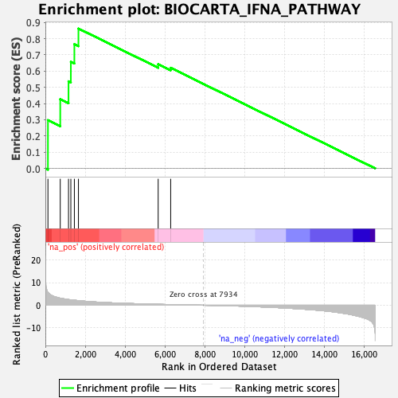

| | | Dataset | DE_genes2 |
| Phenotype | NoPhenotypeAvailable |
| Upregulated in class | na_pos |
| GeneSet | BIOCARTA_IFNA_PATHWAY |
| Enrichment Score (ES) | 0.86226267 |
| Normalized Enrichment Score (NES) | 1.8998153 |
| Nominal p-value | 0.0 |
| FDR q-value | 0.10987319 |
| FWER p-Value | 0.123 |
Table: GSEA Results Summary

Fig 1: Enrichment plot: BIOCARTA_IFNA_PATHWAY
Profile of the Running ES Score & Positions of GeneSet Members on the Rank Ordered List
| PROBE | GENE SYMBOL | GENE_TITLE | RANK IN GENE LIST | RANK METRIC SCORE | RUNNING ES | CORE ENRICHMENT | | 1 | STAT1 | | | 129 | 5.696 | 0.2973 | Yes |
| 2 | JAK1 | | | 746 | 3.121 | 0.4271 | Yes |
| 3 | IFNAR2 | | | 1161 | 2.521 | 0.5371 | Yes |
| 4 | IRF9 | | | 1277 | 2.381 | 0.6576 | Yes |
| 5 | TYK2 | | | 1454 | 2.221 | 0.7659 | Yes |
| 6 | STAT2 | | | 1658 | 2.029 | 0.8623 | Yes |
| 7 | IFNA1 | | | 5655 | 0.414 | 0.6426 | No |
| 8 | IFNAR1 | | | 6282 | 0.290 | 0.6202 | No |
Table: GSEA details [plain text format]
 Fig 2: BIOCARTA_IFNA_PATHWAY: Random ES distribution
Fig 2: BIOCARTA_IFNA_PATHWAY: Random ES distribution
Gene set null distribution of ES for BIOCARTA_IFNA_PATHWAY